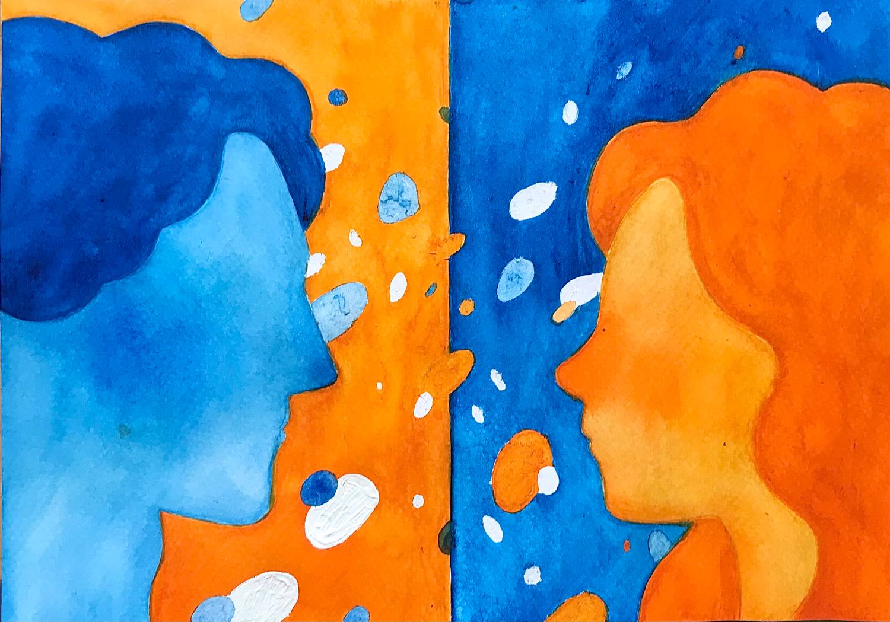
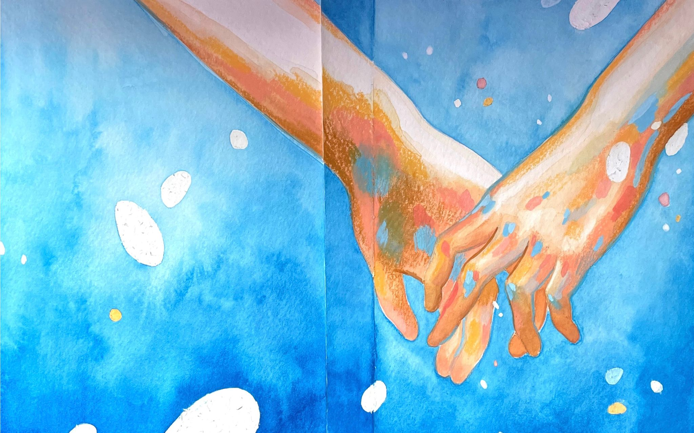
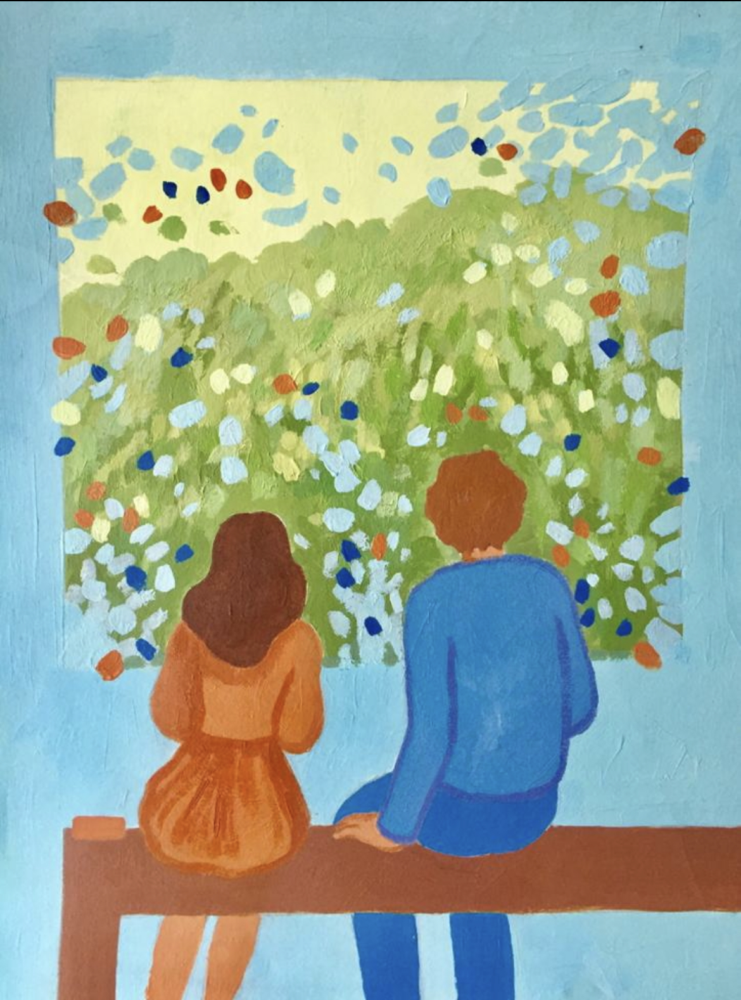
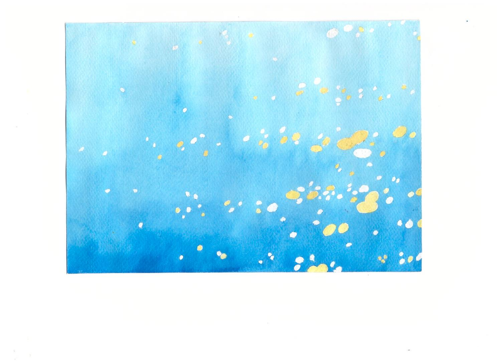
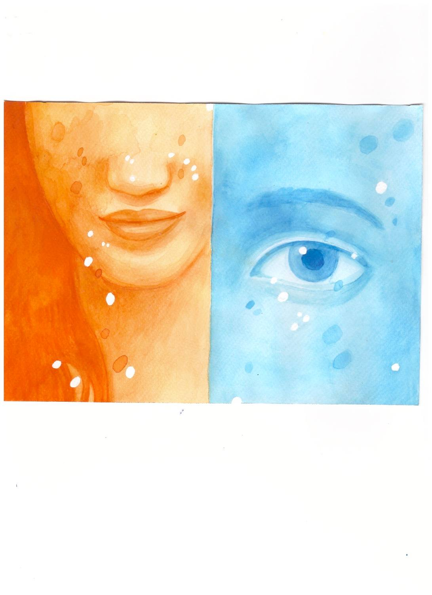
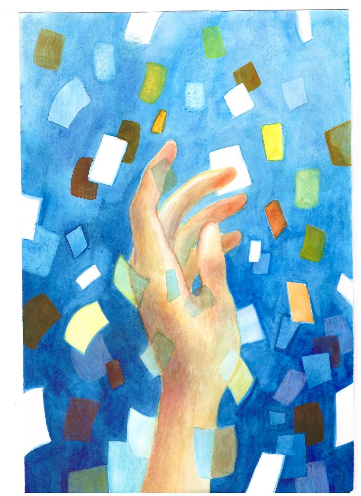
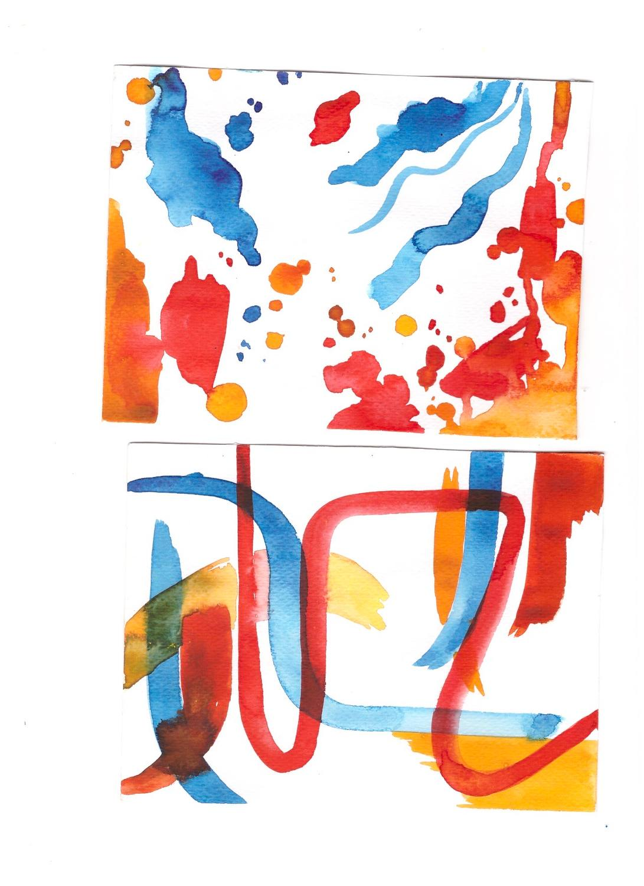

Timothée

Memories of You
Timothée and Madeleine saw the light of the world through love and art—an endless pursuit of becoming. Their obsession consumed them, and what once made them feel alive began to ask for everything they had.

Madeleine Timothée
Timothée
Madeleine
What lived apart
begins to cross.
Painted fragments
Fragments are lost
inside blurred memories.
The air I once breathed
belongs now to time.
Inside an empty room,
I found a world of wonder.
My hand drew silhouettes
to the melody of night.
Colors and brushes slept on the floor;
paper carried fragments of you.
In nothingness,
I found the key
to an inner world—
carried by wind,
longing for your eyes.
Beneath the sea
the sun reached down,
its rays touching my skin;
an obscure voice
led me back to you.
I do not remember your name,
but I remember the bridge of your voice—
the silent place
where only you and I could be.
Your eyes illuminated every room.
You were wholly yourself,
and my heart learned
the shape of your love.
We went too far from the ocean to hear its waves.
Memory began to fade.
Our hearts turned deaf when we broke our only rule:
not to lose one another.
I became the antagonist
of my own becoming—
pain, fatigue,
the loss of vision
following close behind.
Outlines of a human body
dissolved into blue.
A cold wind carried me
back to where everything began.
A voice called from the outside:
“Timothée, they are waiting for you.”
But I wanted one moment longer
inside that beautiful lie.
I closed the door
and left a sea of art behind.
Time changed the place;
the place changed time.
And Madeleine—and every dream I carried—
were still within reach.
The original book




Time changes the place,
and the place changes time.
Once, Madeleine—and every dream he carried—
were still within reach.
Project inquiries